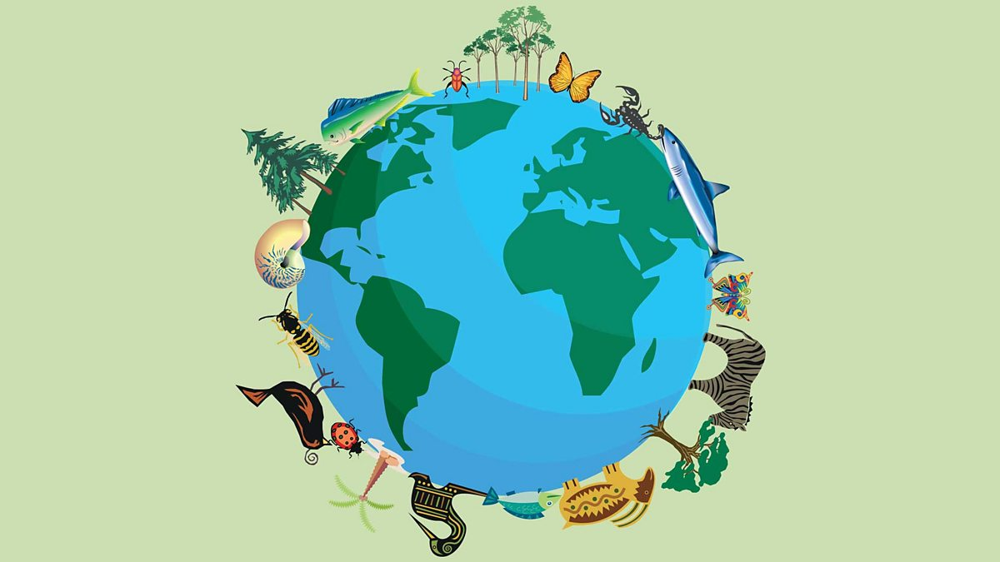
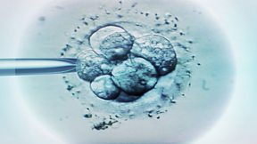

Biology
Welcome to the Biology page!
Multiple Choice Questions
Adaptations and Evolution

- Which of these is not a type of adaptaion?
- Behavioural
- Cultural
- Physiological
- structural
- Which adaptation is least likely in a predator?
- Sharp teeeth
- Good sense of smell
- Camouflage
- Eyes on the side of the head

- Which term describes the range of living organisms within a habitat?
- Biodiversity
- Diversity
- Ecosystem
- Which habitat is likely to have the greatest biodiversity?
- Open Oceon
- Rainforest
- Polar Region
- Desert
- Which is not an adaptation to reduce water damage to plants in rainforests?
- Buttress roots
- Flat leaves
- Drip tips
- Smooth trunks
Reproduction

- Which term describes when a cell becomes specialised?
- Maturity
- Adaptation
- Differentation
- Change
- What does a fertilised ovum become next?
- Baby
- Chromosomes
- Embryo
- Zygote
- Embryonic stem cells can only develop into one cell type.
- True
- False
- Which of these is not a location of adult stem cells?
- Fat Tissue
- Muscle
- Brain
- Intestines
- True or false: Adult stem cells are only found in adults.
- True
- False
Energy Flow

- Which of the following is a carbohydrate?
- Olive Oil
- Bread
- Which of the following contains lipids?
- Cereal
- Cheese
- Which of the following is high in fats?
- Nuts
- Pasta
- Which one of the following contains the most fibre?
- Peas
- Biscuits
- Which contains the most protein?
- Potatoes
- Eggs
Unicellular Organisms

- How many cells is a bacterium made of?
- 1000
- 1
- 10
- 100
- Which of these cell structures do bacteria not have?
- Cell Membrane
- Cell Wall
- Nucleus
- Cytoplasm
- Which structure allows bacteria to move through liquids?
- Cell Wall
- Circular DNA
- Slime Capsule
- Flagella
- Which disease is caused by bacteria?
- Cold
- Food Poisoning
- Athletes Foot
- Flu
- During cooking, high-risk food must reach a temperature of…?
- 72
- 112
- 92
- 52
Humans are animals

- What is the definition of an organ?
- A group of similar cells in the same place with the same function
- An individual animal, plant, fungus, bacterium or protist
- Two or more types of tissue in the same place with the same function
- The smallest unit of life
- What do two or more organs doing the same thing make up?
- Organism
- Cells
- Tissue
- Organ System
- How many organ systems are there in the human body?
- 8
- 11
- 10
- 9
- Which type of cell can contract and relax?
- Ciliated
- Muscle
- Nerve
- Sperm
- Which organ is able to sense pressure, pain and temperature?
- Stomach
- Skin
- Intestines
- Liver
Past Exam Papers
See the exam Questions here
Videos
See the videos here
Textbooks

CGP Higher Textbook

CGP Science Knowledge Organiser